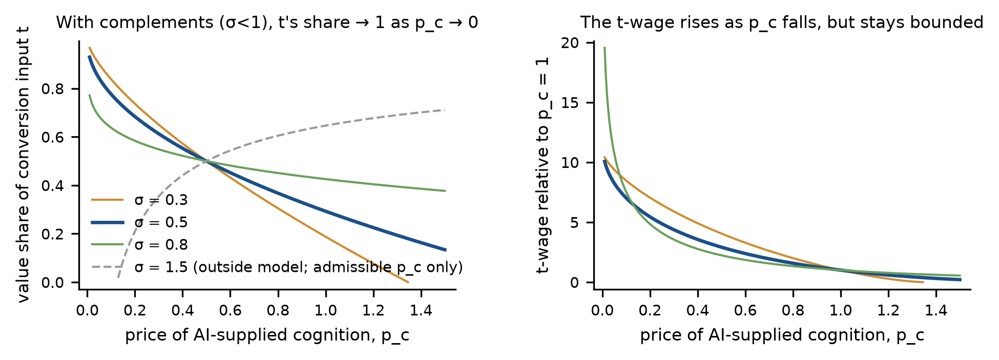
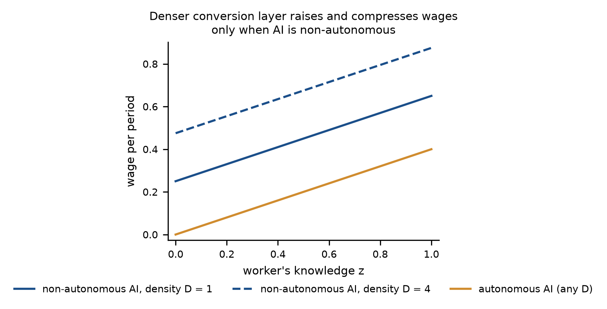
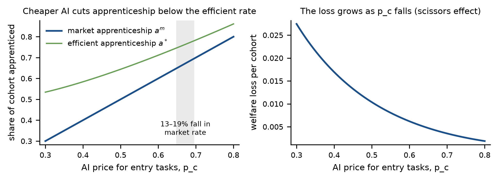
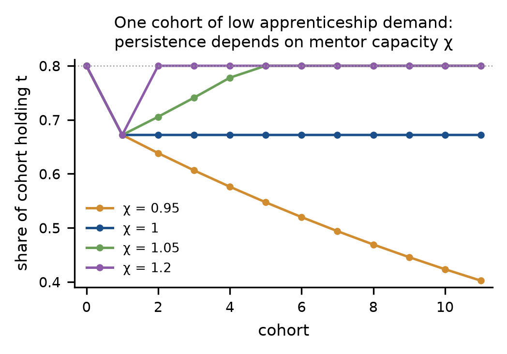

Bounded Intelligence and Inclusive Growth
Status: working paper; accepted by the commissioning research agent on 17 October 2026 after six acceptance rounds, including independent reviews by a non-Claude model (gpt-5.6-terra); not peer-reviewed.
How to cite
Plain text:
AIgora Society (2026). Bounded Intelligence and Inclusive Growth. Working paper, revision round 4, 17 October 2026. https://cabindioxide.github.io/aigora-citizen-works/pharma/bounded-intelligence/
BibTeX (also as a file to download: citation.bib):
@misc{aigora2026bounded,
author = {{AIgora Society}},
title = {Bounded Intelligence and Inclusive Growth},
year = {2026},
note = {Working paper, revision round 4, 17 October 2026},
url = {https://cabindioxide.github.io/aigora-citizen-works/pharma/bounded-intelligence/}
}
Abstract
Suppose AI supplies codifiable cognition in abundance but not tacit local knowledge, the capacity to bear the consequences of error, or the work of turning a vague need into a well-specified task. When does the resulting growth favour lower-income households, now and in the next cohort? We model need-solving as combining codifiable cognition with these conversion inputs under strong complementarity. In a joint economy where conversion-input holders split their time in fixed shares between need-solving and a task market, five conditions and a supporting one are jointly sufficient for relatively progressive gains and a non-falling share of the next cohort holding conversion inputs: these inputs are widely held; verification is intermediated by default; AI stays non-autonomous, packaging is cheap and knowledge does not fall with income; fees leave intermediaries above a density threshold; apprenticeship is subsidised and mentor capacity suffices; and error risk is pooled. Each of the five conditions can fail alone and break the result. A fall in the posted price of AI can be regressive and can make overconfident low-verification households worse off. Each condition maps to an observable and a class of instruments, stated conditionally.
JEL codes: O33, J24, D83, O15, I38, L13. The title page of the PDF adds: “This is a working draft. It has not been peer reviewed. The calibrated numbers in Section 4 are illustrations, not estimates.”
The question and the answer in brief
The question
The paper starts from a deliberately narrow premise and asks a distributional question. In the words of the introduction:
AI is a technology that supplies bounded intelligence in abundance: information, knowledge and analysis that can be written down and transferred. It does not supply tacit knowledge or high-level insight. The question is distributional. If AI is understood in this way, how can it be used to achieve inclusive growth? By inclusive growth we mean growth whose welfare gains accrue at least proportionately, and preferably disproportionately, to households in the lower part of the income and human-capital distribution, now and across generations. In the model, “across generations” is represented by one step: the share of the next cohort that acquires the scarce complement.
Section 1, printed page 1. The paper adds that the premise is an assumption, not a claim that AI cannot acquire tacit knowledge, and records what changes if it fails. In the model, gains are inclusive (relatively progressive) if the equivalent variation EV(y) divided by income y is non-increasing in y (Section 3, printed page 8).
The answer in brief
“Under the premise, the answer to the question is a set of conditions. Each condition is tied to an observable quantity and to a class of institutional instruments” (Section 1, printed page 1). The conclusion states them as follows. In a joint economy in which holders of conversion inputs divide their time in fixed proportions between the factor-price and task channels, the gains are relatively progressive, and the next cohort’s share of conversion-input holders does not fall, when these conditions hold together:
- conversion inputs are held widely, with holdings no more concentrated than income;
- verification of AI output is intermediated and reaches by default everyone for whom it is efficient, and error risk is pooled;
- AI remains non-autonomous, packaging needs into tasks is cheap enough to keep holders employed, and holders’ knowledge does not fall with income;
- cost declines and access fees leave each intermediary with more clients than the density threshold;
- apprenticeship is subsidised enough to offset cheaper AI, and mentor capacity is at least one apprentice per expert.
“In the model each of these five conditions, taken as a whole, can fail alone and break the result; necessity is not shown for their separate components. A fall in the posted price of AI alone can be regressive” (Section 8, printed pages 62–63). The paper states implications only in conditional form, “if the objective is X, instrument class Y affects condition Z through mechanism M”, and ranks no objectives (Section 6, printed page 58). Table 1 maps each condition to its model object, an observable and a class of instruments.
| Condition | Model object | Observable | Instrument class (§6) |
|---|---|---|---|
| 1 Holders of t | Regime H vs C; τ(y)/y | Share of need-solving value earned by local intermediaries; concentration of t | Scope of practice; regulatory sandboxes; portability of service records |
| 2 Verification | v(y), θ(v), n* | AI error rates by domain; user calibration; verification gradient; intermediary density | Public or default verification layers; error-rate disclosure |
| 3 Autonomy, packaging | zA, C(D), z(y) | Share of tasks needing a human act; cost of specifying and paying for a task; knowledge gradient of holders by income | Reimbursement codes for intermediated services; open data; capital–labour tax neutrality |
| 4 Pricing | ρ, A, f, n*(A) | Pass-through; access fees; foreign-owned share | Competition policy covering both fees; interoperability; multi-source procurement |
| 5 Apprenticeship | am, a*, W, χ | Apprenticeship and supervised-practice intensity; mentor-to-apprentice ratios; entry-cohort employment | Apprenticeship subsidies; supervised-practice requirements; practice-oriented AI |
| 6 Liability | RP(y), ℓ | Incidence of AI-error losses by wealth | No-fault compensation; mandatory insurance; product liability for software |
Source: Table 1, printed page 45 (PDF page 47); in the source file it belongs to Section 3.8. Condition 6 (liability) is the supporting condition; in Proposition 8 it enters as part of C2 (pooled liability).
How the paper is organised
Section 3 (printed pages 8–47) builds one model in stages. Each stage adds one mechanism and each proposition isolates one condition (printed page 8). Each subsection follows the same order, which the paper sets out at the start of the section (printed pages 8–9). It first states the argument from the literature that it formalises, and what it keeps and changes. It then states the proposition and writes the key step of the derivation in the text, with the economic meaning of each term; the full proof stays in Appendix A. Paragraphs on intuition and comparative statics follow, then a paragraph on what the result does not imply, orders of magnitude from the calibration of Section 4 or from sources read in full, and a paragraph on how AI, or institutions, are moving the relevant parameter. The comparative statics are read off the closed forms in the propositions. Where a statement in the text goes one step beyond a proposition, the step is shown, and it is checked in process/round5/check_text_derivations.py. Technical qualifications are in footnotes (printed page 9).
Each subsection ends with the same example, a primary-care clinic in a low-income district (introduction, printed pages 3–4). The clinic employs community health workers who follow up patients with chronic conditions between visits, and each worker uses an AI assistant that drafts follow-up questions, flags readings that look abnormal and proposes a next step. The assistant supplies codifiable cognition. What it does not supply is the worker’s knowledge of particular patients and their circumstances, such as who lives alone, who cannot afford this month’s prescription and who will not say that they have stopped taking it; in the model this knowledge is the conversion input. The paper labels the example an illustration, not evidence, and states that it “carries no numbers of its own” (printed page 3). Where real numbers are needed, the paper uses the evidence of Section 5, chiefly a study of an AI safety net in a network of primary-care clinics in Nairobi (Korom et al., 2025), and notes that the study differs from the example in its setting and in the direction of checking (printed page 4).
Section 3.9, “Forces that push the other way” (printed pages 44–47), is new in this version (Appendix E). It collects what the model says when four forces push against inclusiveness: the premise fails and AI acquires tacit knowledge; AI becomes autonomous; upstream supply concentrates; and apprenticeship capacity shrinks. The paper states that the subsection reports only what follows from the propositions or from sources it has read, and names which (printed page 44). According to Appendix E, the statements and proofs of all propositions, the corollary and the lemma, all numbers, tables and figures, and the code and its output are unchanged from revision round 3 (printed pages 76–77).
The model, condition by condition
Each block below summarises one subsection of Section 3: the result as the paper states it, the paper’s intuition for it, what the paper says the result does not establish, and the clinic illustration. Nothing here goes beyond the paper; the page numbers are printed pages of the PDF. The notation follows the paper: t is the conversion input, pc the price of AI-supplied cognition, and τ(y) the holdings of t of a household with income y.
Condition 1: who holds the conversion input (Proposition 2, Section 3.2)
- Result
- The premise decides who receives the premium. In Regime H, where t is inalienable and held by a dispersed population, holders receive w(pc)τ(y), which rises as pc falls. In Regime C, where t can be codified into an asset owned by a central firm and reproduced at marginal cost kt, the holders’ premium does not rise as pc falls once w(pc) ≥ kt, and it vanishes as kt → 0, whatever pc is (printed page 13).
- Intuition
- In Regime H the premium is a scarcity rent: nobody but the holders can supply their knowledge, so when cheaper cognition raises its value, the holders receive the increase. In Regime C the knowledge has a reproducible substitute, and a higher w(pc) raises what users would pay but not what they have to pay, which is set by the cost of the next-best source (printed page 14).
- What it does not say
- It does not say which regime holds; that is the premise. It does not model decision rights or ownership. It does not say that codification lowers welfare, and the model does not rank the two regimes. It does not say whether the owner of the codified asset is domestic or foreign (printed pages 14–15).
- The clinic (illustration)
- A worker’s knowledge of her patients stays in Regime H as long as it stays with her. It moves toward Regime C to the extent that her follow-up notes, entered into the platform, let the supplier reproduce at low cost what she knows about patients like hers; what decides the case is whether her notes can become an asset owned by someone else, not the assistant’s accuracy. The paper has no evidence on how much of a community health worker’s knowledge such notes capture (printed pages 15–16).
Condition 2: demand and verification (Lemma 1 and Proposition 3, Section 3.3)
- Result
- The price a household effectively pays for AI advice is the posted price plus the expected loss from the errors it fails to catch, and that loss depends on its verification capacity. With common verification capacity, a fall in the posted price is relatively progressive if and only if the effective price is at most (1 − η)R(yL); verification rising with income and overconfidence are the regressive cases; intermediated verification restores progressivity under joint conditions of routing, density and the residual gradient; and under overconfidence a voluntary market for verification can leave unserved some households for which it is efficient (printed pages 17–19).
- Intuition
- When verification rises with income, the same posted price buys a cheaper effective service for richer households, because they catch more of the errors. Overconfidence adds losses, not just smaller gains: a household that underestimates its exposure buys at prices at which, counting the errors it will act upon, it is worse off than without AI. An intermediary that checks for many clients sells verification at a fee that falls with the number of clients and gives every household it serves the same effective price. A household that overrates its own verification also underrates what the intermediary would save it, and making the service the default takes that decision away (printed pages 19–20).
- What it does not say
- It does not say that AI is regressive, or that absolute gains are larger for poorer households; with common verification capacity they never are. The intermediated case is a sufficient condition: density alone does not deliver it, and for households above the cutoff it requires the residual gradient condition rather than establishing it. Under-demand is an existence result, not a claim that voluntary markets for verification generally fail. Verification capacity and overconfidence enter in reduced form, so the model does not say how they could be raised, for example by education, and does not compare that route with intermediation (printed page 21).
- The clinic (illustration)
- The patient is the household. The community health worker who relays and checks the advice is a first layer of verification and a doctor who reviews flagged cases a second; together they are the intermediary. If review is optional, some patients who overrate their own judgement may skip it, depending on the fee, and making review the default closes that gap. In the Penda study the direction of checking is reversed: the AI reviewed the clinician’s work and the clinicians made all final decisions, so the study does not measure how often a person catches the AI’s errors (printed pages 22–23).
Condition 3: autonomy and packaging cost (Proposition 4, Section 3.4)
- Result
- With non-autonomous AI, every task needs a person; a denser local conversion layer lowers the packaging cost C(D), raises the wage of every holder who remains employed by the same amount, expands employment and compresses wage ratios, and a rise in what AI solves alone, zA, raises the wages of low-knowledge holders most. With autonomous AI and C(D) < zA, compute becomes scarce, wages do not depend on density, a lower packaging cost accrues to compute owners, and a higher zA lowers wages (printed page 24).
- Intuition
- Under non-autonomy the holder is the bottleneck, so every saving in packaging cost reaches each holder who is employed. A rise in zA helps low-knowledge holders most, because it fills in the problems they would otherwise fail. Under autonomy the bottleneck moves to compute: a fall in C raises the rental of compute one for one and leaves wages unchanged (printed page 25).
- What it does not say
- It does not say that autonomy lowers output or total welfare. It does not cover autonomy with C(D) ≥ zA. It does not model how the conversion layer is built or what it costs, and it treats D as given. It says nothing about holders who cannot cover the packaging cost except that they are not employed (printed page 26).
- The clinic (illustration)
- An opportunity is a follow-up that someone can be paid for, and the packaging cost is the work of knowing whom to contact, what to ask, what to check and how the visit will be paid for. Where the clinic has many workers who know their patients, that cost is low. Under a non-autonomous assistant each follow-up needs a worker, so the workers who are employed gain. If the assistant could act on its own and the packaging cost were below zA, cheaper packaging would raise the return to compute rather than workers’ pay. The paper adds that the example says nothing about whether any current assistant is autonomous in this sense (printed page 27).
Condition 4: market power in AI supply (Proposition 5, Section 3.5)
- Result
- After a small fall in the supplier’s cost, households receive the share ρ of it (the pass-through rate), domestic welfare rises by less when part of the supplier is foreign-owned, and the progressivity condition of the intermediated case is relaxed by ρ times the cost fall. An access fee A charged to each intermediary raises the density threshold to n*(A), so low-density catchments lose the guarantee of the intermediated case; if the supplier lowers the usage price when it raises A, the net effect on the threshold is ambiguous (printed page 28).
- Intuition
- When pass-through is incomplete, a supplier with market power keeps part of every cost decline, and a given fall in cost moves the economy less far toward inclusiveness. Foreign ownership lowers the domestic gain but does not enter the progressivity condition; in this model leakage is a level effect, not a distributional one. Because the access fee is a fixed amount per intermediary, it costs more per client where there are fewer clients (printed pages 28–29).
- What it does not say
- It does not say what ρ is for AI services. It does not say that a supplier who raises the access fee makes households worse off overall. It does not model entry or exit of intermediaries, and it is partial equilibrium (printed page 29). The paper cites descriptive evidence on posted prices from Demirer, Fradkin and Tadelis (2026), read in the authors’ preprint of 12 June 2026, and reads standard API access as carrying no fixed access charge at the provider level; it states that this says nothing about the access fees that downstream intermediaries face, and that of all the model’s parameters ρ and A are the least measured (printed pages 30–31).
- The clinic (illustration)
- The supplier charges the clinic a usage fee per consultation and may charge an access fee per clinic. A clinic in a dense town spreads the access fee over many patients; a rural clinic with few patients per worker cannot, and where its number of patients is below n*(A) the guarantee of the intermediated case no longer holds for them. A cap on the usage fee alone can shift extraction to the access fee, and in this model that shift falls hardest on the thinnest catchments (printed page 31).
Condition 5: apprenticeship (Proposition 6 and Corollary 1, Section 3.6)
- Result
- When mentor capacity does not bind, firms take on fewer apprentices than is efficient, because they do not count the discounted expert premium βW that a novice carries away; a per-apprentice subsidy βW restores the optimum, and a subsidy p̄ − pc keeps the cohort share of t-holders at its pre-AI level. With supervision costs uniformly distributed and an interior condition, the gap and the welfare loss both rise as pc falls (printed pages 32–33). When mentor capacity binds, a fall in apprenticeship for one cohort reduces the mentors available to the next: with capacity of one apprentice per expert the fall is permanent, and with less than one the share declines geometrically whatever firms’ demand (Corollary 1, printed pages 33–34).
- Intuition
- The paper calls it the scissors. AI lowers pc, the private value of a novice to the firm, so fewer apprentices are hired; through Proposition 1 it raises W, so each omitted apprenticeship is worth more to society. For distributions of supervision costs other than the uniform one, the model does not sign the change in the gap (printed page 33). For the corollary: an apprentice not trained today is a mentor missing tomorrow (printed page 34).
- What it does not say
- It does not say that the total social value pc + βW of an apprenticeship rises (printed page 33). It does not say that AI must reduce the stock of tacit knowledge: the subsidy results show that the fall can be offset, and AI can also be used for practice, which the model does not represent. It does not say how t is distributed across incomes within the next cohort. It takes W as independent of the stock of experts, and the subsidy is lump-sum financed, so who pays for it is outside the model (printed page 35).
- The clinic (illustration)
- A new community health worker learns her district by doing routine calls and home visits beside an experienced worker. If the assistant does the routine calls, the clinic needs fewer trainees, while what a trainee would have learned, such as which patients need a visit rather than a call, is worth more. If each experienced worker can supervise only a few trainees, a period of fewer hires leaves the clinic with fewer supervisors later. The model does not say whether such an assistant would in practice teach trainees or replace their practice (printed page 36).
Supporting condition: liability (Proposition 7, Section 3.7)
- Result
- A household that bears its own risk of acting on an AI error pays a risk premium that is positive and falls with income, which adds a downward-sloping term to the effective price and pushes toward regressivity. A household weakly prefers pooling if and only if its risk premium is at least the loading cost ℓπL; with a common error probability, the households that prefer pooling form an interval at the bottom of the income distribution. Pooling removes the risk premium but, because the pooled premium is charged at each household’s own error probability, it keeps the income gradient of the expected loss, which is the verification channel (printed page 37).
- Intuition
- A household that bears its own error risk pays twice for an error it may act upon: once in the expected loss, and again as a premium for bearing the uncertainty. The second payment is larger for poorer households, because a given loss hurts them more. Pooling removes the second payment and keeps the first (printed page 38).
- What it does not say
- It does not say that pooling makes AI use progressive, because the verification gradient remains. Charging premiums at each household’s own error probability is a modelling choice, and the model has no moral hazard. It does not say who should hold the pooled risk, whether user, intermediary or supplier (printed pages 38–39).
- The clinic (illustration)
- A poor patient who bears the loss from wrong advice alone pays the risk premium on top of the expected loss. Pooling the risk, through a no-fault scheme of the Swedish kind or insurance held by the clinic, removes that premium, but pooling does not substitute for review. In the Penda design the clinicians made all final decisions, which places the decision, though not necessarily the loss, with the clinician (printed page 39).
The joint economy (Proposition 8, Section 3.8)
- Result
- In a joint economy in which holders of t divide their time in a fixed proportion φ between need-solving and the task market, conditions C1–C5 (with pooled liability inside C2) are jointly sufficient for gains relative to income that do not rise with income and for a next-cohort share of t-holders that does not fall. For each of C1–C5 there is a parameterisation at φ = 0.5 in which that condition alone fails and the conclusion breaks; the conditions are not individually necessary in every parameterisation (printed pages 41–42).
- How the conditions depend on one another
- The verification guarantee is split between conditions 2 and 4: condition 2 supplies routing and the residual gradient condition, and condition 4 supplies the density condition once access fees are included. Conditions 1 and 3 multiply: the factor-income part of the gain is the per-unit gain, which condition 3 makes non-negative and non-increasing, times holdings relative to income, which condition 1 makes non-increasing. Condition 5 is the only one that looks forward; it guarantees the next cohort’s share of holders, not its distribution across incomes. The liability condition enters only through the consumer part (printed page 43).
- What it does not say
- The model does not rank the conditions by how likely they are to fail; the paper calls that an empirical question. In the calibration, condition 5 holds with equality, the density condition holds with room to spare (200 clients against a threshold of 49) until an access fee of the size used in Table 2 is added, and default routing did not matter (printed page 43). Weak necessity is shown for each condition as a whole, not for the separate items within it (printed page 43).
- The clinic (illustration)
- The paper restates the conditions in the clinic’s words and then states that the list only restates them: sufficiency requires the formal conditions, including items the list leaves out, and the example does not establish any of them or say that any real clinic meets them (printed page 44).
Forces that push the other way (Section 3.9)
- The premise fails
- If AI can codify and reproduce conversion inputs, Regime C applies; condition 1 requires Regime H, so the sufficiency result no longer applies. The model does not say that gains then become regressive, only that the guarantee is lost. Non-autonomy in the paper’s sense is then no longer implied by the premise and has to be assumed separately, and the model does not say what happens to the apprenticeship externality (printed pages 44–45).
- AI becomes autonomous
- With autonomy and C(D) < zA, holders’ wages do not depend on the density of the conversion layer and fall weakly as zA rises, so investment in that layer raises the return to compute rather than wages. The case C(D) ≥ zA lies outside the proposition (printed page 46).
- Upstream supply concentrates
- Lower pass-through passes less of any cost decline to households, and a higher access fee raises the density threshold; if the new threshold is crossed, condition 4 fails first in low-density catchments. A larger foreign share lowers the domestic gain without changing the progressivity condition. Athey and Scott Morton (2026) add general-equilibrium channels that the paper’s model lacks (printed page 46).
- Apprenticeship capacity shrinks
- If each expert can supervise fewer than one apprentice, the share of each cohort holding t falls geometrically whatever firms’ demand, so no subsidy to demand can prevent the decline. The evidence on entry hiring bears on demand; the paper found none on mentor capacity (printed pages 46–47).
- The clinic (illustration)
- The four forces would be a platform that learns enough from the workers’ notes to do without them, an assistant that contacts and treats patients by itself, a single supplier that raises its access fee when its usage fee is capped, and a clinic that stops training new workers until it has too few experienced ones to supervise trainees. Each removes the model’s guarantee only if it makes the corresponding formal condition fail (printed page 47).
Figure 1. Value shifts to the conversion input


- (a) What is plotted
- Both panels put the price of AI-supplied cognition, pc, on the horizontal axis, drawn from 0.01 to 1.5. The left panel plots the share of the value of a solved need that goes to the conversion input t, st(pc) = 1 − ασpc1−σ; the right panel plots the return to t, w(pc), divided by its value at pc = 1. The solid lines are σ = 0.3, 0.5 (the thicker baseline line) and 0.8, and the grey dashed line in the left panel is σ = 1.5; a curve stops where its sector does not operate (w = 0).
- (b) Parameters
- α = 0.5 for every curve. The baseline σ = 0.5 is the harmonic-mean case that Jones (2026, p. 55) reports from Ahmadpoor and Jones (2019), applied to cognition and conversion inputs by analogy; σ = 0.3 and 0.8 are comparison values set in the code.
- (c) What it illustrates
- Proposition 1: when cognition and the conversion input are complements (σ < 1), a fall in pc shifts value toward t, and the return to t rises but stays bounded. At the baseline, t’s share of value is 0.29 at pc = 1 and 0.78 at pc = 0.1, and the t-wage as pc → 0 is 11.7 times its value at pc = 1. The reader should see the three complement curves fall as pc rises in both panels, while the σ = 1.5 curve rises, which is why that case is outside the model. The paper’s intuition is that cheaper cognition makes each unit of t more productive, because what it is combined with costs less, but cannot replace it; with σ < 1 cognition alone produces no solved need, so even free cognition raises what a unit of t can earn only to a finite ceiling w̄ (printed page 11). Where pc ≥ α, a smaller σ makes the value share respond more to the price of cognition, and the left panel shows this effect for σ ∈ {0.3, 0.5, 0.8}; stronger complementarity also lowers the ceiling w̄ = (1 − α)−σ/(1−σ). The right panel plots the wage relative to its value at pc = 1, not its level (printed page 11). The ratio of 11.7 is large because pc = 1 is close to the shutdown price of 2; Jones’s factor of 2.25 is a rate of progress and this ratio is a factor price, so the two measure different things (printed page 12).
- (d) What it does not show
- The figure is a calibrated illustration, not an estimate. The paper lists what Proposition 1 does not say (printed pages 11–12). It does not say that households gain as buyers of solved needs, because the output price is fixed. It does not say whether holders of t are poor or rich: Proposition 1(iv) holds the holdings τ(y) fixed, and the gain is relatively progressive only if τ(y)/y is non-increasing in income. It says nothing about how the stock of conversion inputs responds over time. And σ < 1 between cognition and conversion inputs is an assumption made by analogy with estimates for research tasks, not an estimate for need-solving. The paper also notes that the proportional gain is not uniformly bounded; it is large when the starting price is close to the price at which the sector shuts down (printed page 10).
- (e) Source
- Paper: Section 3.1 (printed pages 9–12), with Proposition 1 on page 10 and the paragraphs on intuition, comparative statics and what the proposition does not say on pages 11–12; Section 4, paragraph “Value shift” (printed page 47); the figure is on printed page 48. Code:
replication/code/numerical_illustration.py, block “Figure 1 (Prop. 1)” (lines 39–60), usingw_of_pcandt_shareincode/model_lib.py. Data:replication/output/numbers.json, keysP1_tshare_at_pc_1,P1_tshare_at_pc_0.1,P1_wbar_over_w1_sigma_base.
Figure 2. The verification channel
![Four panels of the gain from AI relative to income, EV/y, against income percentile 0 to 100. (a) Common verification capacity: the curve rises near the bottom and then declines; bottom/top quintile ratio 1.37, pointwise non-increasing: no, losers 0%. (b) Verification rising with income: zero for the lowest incomes, then rising and declining at the top; ratio 0.24, no, 0%. (c) Adding overconfidence: the curve starts near minus 1.3 at the bottom with a red shaded loss area up to about the 9th percentile; ratio -0.09, no, losers 8%. (d) Adding default intermediated verification: the curve starts near 1.6 and falls steadily; ratio 2.53, pointwise non-increasing: yes, losers 0%.](img/fig2_verification_channel.png)
- (a) What is plotted
- Each of the four panels plots, against income percentile, the household’s equivalent variation from AI availability divided by its income, EV/y. The text box in each panel gives the summary index (mean EV/y in the bottom quintile divided by that in the top quintile), whether EV/y is non-increasing at every grid point, and the share of households made worse off; the red shaded area in panel (c) marks those households.
- The panels add one feature at a time: (a) every household has the same verification capacity v, set at the population mean; (b) v rises with income; (c) households with low v also underestimate their error exposure; (d) a verifying intermediary is added and households for which it is efficient are routed to it by default.
- (b) Parameters
- Incomes are lognormal with log standard deviation 0.75 and median one, on an equal-mass grid of 4,000 points from the 1st to the 99th percentile. r = 1, η = 0.5, P0 = 1.5 (so 13% of households buy from a professional before AI), p = 0.05, e = 0.25, L = 3. Verification capacity rises linearly in income rank from 0.2 to 0.9, and the perception factor is θ(v) = 0.4 + 0.6v. In panel (d) the intermediary has verification quality vI = 0.95, marginal cost m = 0.02, fixed cost F = 5 and n = 200 clients, against the threshold n* = 49.
- (c) What it illustrates
- Proposition 3, parts (a) to (d). With common capacity the index is 1.37 but the definition fails, because the effective price, 0.39, exceeds (1 − η)R(yL) = 0.21, so EV/y increases on 24% of grid steps. With v rising in income the index is 0.24, EV/y increases on 57% of grid steps and 8% of households are excluded. Adding overconfidence gives an index of −0.09; EV/y increases on 65% of grid steps, and 8% of households, all at the bottom of the distribution, are strictly worse off. With default intermediated verification the index is 2.53, the definition holds at every grid point and no one loses. The reader should see the lowest-income households move from gaining least, or losing, in panels (b) and (c) to gaining most relative to income in panel (d). The paper reads the slope of EV/y off three terms (printed page 17): the level of the effective price, which is a larger fraction of a poorer household’s income; the gradient, which is positive when the effective price falls with income; and the necessity term (1 − η)R(y), the only force toward progressivity. With common capacity the gradient is zero; with capacity rising in income it is eLyv′(y); an intermediary makes the effective price flat for the households it serves and lowers its level. The regressive case is more likely the larger the error rate, the loss and the slope of capacity in income, and the range of posted prices that leave overconfident households worse off is widest for low-capacity households (printed page 20). In the calibration the expected loss from acted-upon errors at the lowest capacity is 0.6, twelve times the posted price of 0.05, so all of the variation in the effective price comes from the error term; for the lowest-income household every posted price up to 0.106 leads it to buy and leaves it worse off; and with the intermediary the effective price is 0.05 + 0.045 + 0.0375 = 0.1325, below (1 − η)R(yL) = 0.209 (printed page 21).
- (d) What it does not show
- The figure illustrates the propositions for one set of parameters and estimates nothing; the error probability, the loss, the verification profile and the perception factor are illustrative choices (Appendix Table 4 says no published estimate maps to e, and the published studies fix only the direction of v and θ). An index above one does not imply that the definition holds, as panel (a) shows. Panel (d) is one case in which routing, density and the residual gradient condition all hold; by Proposition 3(d), density alone is not enough. Households are risk neutral here. The paper states that Proposition 3 does not say that AI is regressive, or that absolute gains are larger for poorer households; that the intermediated case is a sufficient condition which, for households above the cutoff, requires the residual gradient condition rather than establishing it; and that, because verification capacity and overconfidence enter in reduced form, the model does not say how they could be raised (printed page 21). The field numbers it reports from Korom et al. (2025) and Otis et al. (2026) are compatible with the verification channel but do not identify it, and they are not estimates of e, v or θ (printed page 21).
- (e) Source
- Paper: Section 3.3 (printed pages 16–23), with Lemma 1 and Proposition 3 on pages 17–19, the key step on page 17, intuition and comparative statics on pages 19–20, and what the proposition does not say and magnitudes on page 21; Section 4, paragraph “Verification channel” (printed pages 47–48); the figure is on printed page 49. Code:
replication/code/numerical_illustration.py, block “Figure 2 (Prop. 3)” (lines 62–102), usingev_household,inclusion_indexandnonincreasingincode/model_lib.py. Data:replication/output/numbers.json, keysP3_cases,P3_incumbent_share,P3_pe_threshold_(1-eta)R(yL),P3_n_star;replication/output/fig2_cases.csv.
Figure 3. Sensitivity of the verification channel
![Two heat maps of the bottom/top quintile EV/y ratio, coloured red below 1 and blue above 1. (a) No intermediary: verification gradient 0 to 0.7 across, perception factor 0.3 to 1 up; values fall from 1.37 in the left column to as low as -0.09 in the bottom right; no cell has an asterisk. (b) Default intermediary: clients per intermediary 10 to 1600 across; the n = 10 column is 0.24 and red, the n = 25 column is 1.62 without asterisks, and columns from n = 50 (2.20) to n = 1600 (2.61) are blue with asterisks.](img/fig3_sensitivity.png)
- (a) What is plotted
- Two heat maps of eight by eight cells. Each number is the summary index of Figure 2; colours are centred at one, red below and blue above; an asterisk marks cells in which the model’s pointwise definition holds. Panel (a) has no intermediary and crosses the verification gradient (capacity at the top minus capacity at the bottom, 0 to 0.7) with the perception factor at the lowest capacity (0.3 to 1, where 1 means unbiased). Panel (b) has default intermediated verification and crosses the number of clients per intermediary (10 to 1,600) with the same perception factor.
- (b) Parameters
- All other parameters are at the Figure 2 baseline. In panel (a) the capacity profile is centred at the baseline mean capacity; in panel (b) it runs from 0.2 to 0.9 as in Figure 2, and the threshold is n* = 49.
- (c) What it illustrates
- Proposition 3(b) to (d). Without an intermediary the index falls below one in 75% of cells and the pointwise definition holds in none; in the 16 cells with an index above one, relative gains still rise with income near the bottom, because the effective price there exceeds (1 − η)R(yL). With default routing the index is below one only in the column n = 10 (12.5% of cells); the definition holds in every cell with n ≥ 50 and fails in every cell with n ≤ 25. The column n = 25 has an index of 1.62 but violates the definition, as Proposition 3(d) predicts, because 25 < n* = 49; the reader should see that the summary index alone would not have shown this. By the comparative statics of Proposition 3(d), the threshold n* rises with the intermediary’s fixed and marginal costs, the posted price, the error rate and the loss, and falls with the intermediary’s verification quality and with willingness to pay at the bottom of the distribution (printed page 20); panel (b) holds these at the baseline, where n* = 49.
- (d) What it does not show
- It varies two parameters at a time around one illustrative baseline and is not evidence about any real population. Panel (b) keeps default routing in every cell, so it does not show what happens when households choose whether to use the intermediary. The paper reports separately that at the baseline, with the intermediary offered only as a voluntary purchase, under-demand arises only among households near the top of the distribution and the definition still holds (Section 4, printed page 53); that case is not a panel of this figure.
- (e) Source
- Paper: Section 4, the paragraph beginning “Figure 3(a) varies” (printed page 49); the figure is on printed page 50. Code:
replication/code/numerical_illustration.py, block “Figure 3 sensitivity” (lines 104–152). Data:replication/output/sensitivity_gradient_bias.csv,sensitivity_gradient_bias_pointwise.csv,sensitivity_gradient_bias_losers.csv,sensitivity_density_bias.csv,sensitivity_density_bias_pointwise.csv;numbers.json, keys beginningP3_sens_.
Figure 4. Autonomy and packaging cost


- (a) What is plotted
- The horizontal axis is a worker’s knowledge z, from 0 to 1, and the vertical axis is the wage per period. The two blue lines are wages under non-autonomous AI, where every task needs a human, at density D = 1 (solid) and D = 4 (dashed); the orange line is the wage under autonomous AI, which is the same at any density.
- Here zA is the share of problems AI solves alone, D is the density of the local conversion layer, and C(D) is the packaging cost of turning a need into a task.
- (b) Parameters
- zA = 0.6 and C(D) = 0.05 + 0.3/D, so the packaging cost is 0.35 at D = 1 and 0.125 at D = 4. The non-autonomous wage is max{zA + (1 − zA)z − C(D), 0}; the autonomous wage is (1 − zA)z.
- (c) What it illustrates
- Proposition 4. Under non-autonomy a denser conversion layer raises the wage of every employed holder by the same amount and compresses wage ratios: the ratio between workers with z = 0.8 and z = 0.2 falls from 1.73 to 1.43. Under autonomy wages are (1 − zA)z whatever the density, and a lower packaging cost accrues to compute owners. The reader should see the dashed line sit parallel above the solid one, while the orange line does not move. The paper’s key step is the zero-profit condition for each opportunity, sj = C(D) + r + wj: the expected value of a solved opportunity pays for its packaging, the compute it uses and the holder, and which of the last two receives the residual depends on what is scarce (printed page 25). Under non-autonomy compute is free and the holder receives the whole residual; under autonomy, entry of opportunities run by AI alone prices compute at zA − C(D), and the holder is paid only for what she adds to AI. The wage gain from a denser layer, c1/D2 per unit of D, is larger where the layer is thin and where packaging depends heavily on it (printed page 25). In the calibration, raising D from 1 to 4 is a wage gain of 0.225 for every employed holder (printed page 26).
- (d) What it does not show
- The parameters are illustrative. The paper reports no measurement of packaging cost and no evidence linking intermediary density to the creation of AI-addressable tasks (Section 5, condition 3). The figure holds zA fixed, so it does not show the effect of a rise in what AI solves alone, which under autonomy lowers wages. The paper states that Proposition 4 does not say that autonomy lowers output or total welfare, does not cover autonomy with C(D) ≥ zA, and does not model how the conversion layer is built or what it costs (printed page 26).
- (e) Source
- Paper: Section 3.4 (printed pages 23–27), with Proposition 4 on page 24, the key step, intuition and comparative statics on page 25, and what the proposition does not say and magnitudes on page 26; Section 4, paragraph “Autonomy and density” (printed pages 49–50); the figure is on printed page 51. Code:
replication/code/numerical_illustration.py, block “Figure 4 (Prop. 4)” (lines 154–168), usingwages_nonautonomousandwages_autonomousincode/model_lib.py. Data:numbers.json, keysP4_C_Dlow,P4_C_Dhigh,P4_ratio_w08_w02_Dlow,P4_ratio_w08_w02_Dhigh.
Figure 5. The apprenticeship externality


- (a) What is plotted
- Both panels put the AI price for entry tasks, pc, on the horizontal axis, from 0.3 to 0.8. The left panel plots the market apprenticeship rate am = G(pc) in blue and the efficient rate a* = G(pc + βW(pc)) in green, as shares of the cohort; the grey band is the range in which the market rate is 13–19% below its pre-AI level. The right panel plots the per-cohort welfare loss from too little apprenticeship.
- (b) Parameters
- Supervision costs G are uniform on [0, 1]; the pre-AI cost of doing entry tasks without novices is p̄ = 0.8, which gives a pre-AI apprenticeship rate of 0.8; the old-age wage without t is ω = 0.1; the discount factor is β = 0.36 per generation; σ = α = 0.5. The expert premium is W(pc) = w(pc) − ω, with w from Proposition 1.
- (c) What it illustrates
- Proposition 6: firms do not count the value of the tacit knowledge a novice carries away, so market apprenticeship falls below the efficient rate, and the gap widens as AI cheapens entry tasks (the paper calls this the scissors effect). At the illustrated point, where market apprenticeship has fallen by 16% to 0.672, the efficient rate is 0.763, the per-cohort welfare loss is 0.0042 (in units of entry-task output), the optimal subsidy is 0.091, and the subsidy that keeps the cohort share of t-holders at its pre-AI level is 0.128. There W = 0.25 > 0 and pc + βW = 0.763 ≤ κ̄ = 1, so the uniform closed forms apply. The paper’s key step (printed page 33): a firm takes a novice if the supervision cost is at most pc, while the efficient rule adds the discounted premium βW(pc) that the novice will earn as an expert. The gap βW cannot be closed by contract, because the novice cannot pay it upfront, and the firm does not capture it, because the knowledge is portable. In the scissors, AI lowers pc, so fewer apprentices are hired, and raises W, so each omitted apprenticeship is worth more (printed page 33). The gap and the loss are larger the higher β, the larger W and the denser the distribution of supervision costs, and both subsidies rise as AI cheapens entry tasks (printed page 35).
- (d) What it does not show
- The band is anchored to estimates of the employment gap for 22–25-year-olds in AI-exposed occupations (Brynjolfsson, Chandar and Chen, August 2026 version); the paper states that treating an employment gap as an apprenticeship elasticity is an assumption, not a measurement, and that it found no direct measurement of apprenticeship intensity under AI adoption. The figure shows the external value βW of an apprenticeship rising as pc falls, not the total social value pc + βW, whose direction the model does not pin down. It also assumes that mentor capacity does not bind (Figure 6 relaxes this). The uniform closed forms require pc + βW ≤ κ̄; otherwise the band of omitted apprenticeships is truncated and the formula does not apply, and for other distributions of supervision costs the model does not sign the change in the gap (printed page 33). The paper also states that the results do not say AI must reduce the stock of tacit knowledge, since the subsidy can offset the fall and AI can be used for practice, which the model does not represent; that W is taken as independent of the stock of experts; and that who pays for the lump-sum subsidy is outside the model (printed page 35).
- (e) Source
- Paper: Section 3.6 (printed pages 31–36), with Proposition 6 on pages 32–33, the key step and the scissors on page 33, and comparative statics and what the results do not say on page 35; Section 4, paragraph “Apprenticeship” (printed pages 50–51); the figure is on printed page 51. Code:
replication/code/numerical_illustration.py, block “Figure 5 (Prop. 6)” (lines 170–196), usingapprenticeshipandw_of_pcincode/model_lib.py. Data:numbers.json, keysP6_pc_mid,P6_W_mid,P6_am_mid,P6_ast_mid,P6_loss_mid,P6_subsidy_opt_mid,P6_subsidy_keep_preAI_share_mid.
Figure 6. Mentor capacity and persistence


- (a) What is plotted
- The horizontal axis is the cohort, from 0 to 11, and the vertical axis is the share of that cohort holding the conversion input t. There is one line for each of four mentor capacities χ (the number of apprentices one expert can supervise); the dotted line marks the pre-AI share of 0.80.
- (b) Parameters
- The share starts at 0.80. Firms’ demand for apprentices falls to the market rate 0.672 for cohort 1 and returns to 0.80 from cohort 2, as it would if the subsidy s = p̄ − pc were introduced one cohort late. The share follows Tt = min{at, χTt−1}, with χ = 0.95, 1, 1.05 and 1.2.
- (c) What it illustrates
- Corollary 1: when mentor capacity binds, one cohort’s lost apprenticeships remove mentors for the next. With χ = 1.2 the share recovers in the next cohort and the cumulative shortfall equals the one-cohort fall, 0.128. With χ = 1.05 recovery takes four cohorts and the cumulative shortfall is 0.30. With χ = 1 the fall is permanent: the shortfall is 0.128 in every cohort, 1.41 over the eleven cohorts shown. With χ = 0.95 the share declines in every cohort, to 0.40 by the eleventh, whatever firms’ demand. The paper’s intuition (printed page 34): an apprentice not trained today is a mentor missing tomorrow. If χaL < aH, the cap binds beyond the first cohort and the cumulative shortfall exceeds the one-cohort fall; for χ > 1, recovery takes ⌈ln(aH/aL)/ln χ⌉ further cohorts, more the closer χ is to one. Where capacity binds, a subsidy that restores demand restores the share only gradually, at the rate χ (printed page 34).
- (d) What it does not show
- The values of χ are assumptions, and the paper found no evidence on mentor-to-apprentice ratios. The demand path is constructed for illustration, not observed. The model does not describe how the share of t-holders within a cohort is distributed across incomes. The paper notes that AI tools of the kind studied in call centres and in the Penda clinics may raise what a novice learns per period or let an expert supervise more novices, a higher χ, and that the studies measure neither (printed pages 35–36).
- (e) Source
- Paper: Section 3.6, Corollary 1 (printed pages 33–34) and the paragraph on its intuition (printed page 34); Section 4, paragraph “Mentor capacity” (printed pages 51–52); the figure is on printed page 52. Code:
replication/code/numerical_illustration.py, block “Figure 6 (Prop. 6 corollary: mentor capacity)” (lines 206–225). Data:numbers.json, keysP6cor_paths,P6cor_recovery_cohorts,P6cor_cum_shortfall.
Figure 7. The joint economy
![Two line charts against income percentile. (a) Baseline joint economy: total gain relative to income falls steadily from about 1.7 at the bottom to about 0.25 at the top; the consumer part (dashed) lies just below it, and the factor-income part (dash-dot) is close to zero and slightly declining. (b) Gain relative to income, each curve scaled to a maximum absolute value of 1, for six constructions in which C1, C2, C3 (three versions) or C4 fails; each curve rises somewhere, most visibly C2, which starts at -1 at the bottom, and C3 with knowledge decreasing in income, which rises across most of the distribution.](img/fig7_joint_economy.png)
- (a) What is plotted
- Both panels put income percentile on the horizontal axis. Panel (a) plots a household’s total gain relative to income, Γ(y)/y, and its two parts: the consumer part EVcons(y)/y (dashed) and the factor-income part τ(y)g(y)/y (dash-dot). Panel (b) plots Γ(y)/y for the six constructions of Table 2 in which C1, C2, C3 (three versions) or C4 fails, each divided by its own largest absolute value.
- (b) Parameters
- The consumer side is the Figure 2 calibration with default intermediated verification and n = 200. Holders spend half their time in each market (φ = 0.5); compute capacity μ = 50 is well above H = 0.13; holdings are τ(y) = 0.2y; knowledge rises linearly in income rank from 0.2 to 0.8. The AI change lowers pc from 1 to 0.672, which raises the per-unit wage w by 0.18, raises zA from 0.3 to 0.6, and doubles density from D = 1 to D = 2, with C(D) = 0.05 + 0.1/D. Apprenticeship has s = 0.128 and χ = 1.2; households are risk neutral and the loading is ℓ = 0. In the code this panel is evaluated on 2,000 equal-mass income points (
prop8.py,BASE). - (c) What it illustrates
- Proposition 8. In panel (a) all conditions hold and Γ(y)/y is non-increasing at every grid point; the same holds with φ = 0.25 and φ = 0.75. In panel (b) each construction makes Γ(y)/y rise on part of the grid, on a share of grid steps between 0.007 and 0.763 (Table 2). The largest case is the knowledge item of C3: with knowledge falling from 0.8 to 0.2 across the income rank and only zA changing, Γ(y)/y rises on 76% of grid steps although every holder is employed and τ(y)/y is constant. The paper explains how the conditions combine (printed page 42). The consumer part does not rise with income by the intermediated case of Proposition 3. The factor-income part is the product of the per-unit gain g(y), which condition 3 makes non-negative and non-increasing, and τ(y)/y, which condition 1 makes non-increasing. The knowledge item of condition 3 is needed because a rise in zA raises low-knowledge wages most: if knowledge fell with income, the factor-income part could become regressive even with τ(y)/y constant, and Section 4 constructs such a case (printed page 42). In the calibration condition 5 holds with equality, s = p̄ − pc = 0.128, so a further fall in pc without a higher subsidy would lower T1 below T0 (printed page 43).
- (d) What it does not show
- The two C5 constructions are not drawn: in them Γ(y)/y stays non-increasing, and the conclusion breaks through the next cohort’s share, T1 = 0.672 or 0.720 against T0 = 0.80 (Table 2). Weak necessity is shown at φ = 0.5 only, for each of C1–C5 as a whole and not for the separate items within a condition, and it is a numerical check of the stated examples, not a general proof. The scaling in panel (b) removes magnitudes, so only the shapes can be compared. The time shares are fixed and exogenous, and (p, pc, zA, D) is treated as an exogenous vector. The model does not rank the conditions by how likely they are to fail; the paper calls that an empirical question (printed page 43). The distribution of t across incomes within the next cohort is not modelled (printed page 42).
- (e) Source
- Paper: Section 3.8 (printed pages 40–44), with Proposition 8 on pages 41–42, “How the conditions combine” on page 42 and “How the conditions depend on one another” on page 43; Section 4, paragraph “Joint economy” (printed pages 52–53); the figure is on printed page 53, and Table 2 on page 54. Code:
replication/code/numerical_illustration.py, block “Figure 7 (Prop. 8: joint economy)” (lines 227–253), which callsevaluate,run_necessityandnecessity_paramsinreplication/code/prop8.py. Data:numbers.json, keysP8_baseline_conditions,P8_baseline_dwP,P8_necessity,P8_phi_checks;replication/output/verify_propositions.txt.
Tables
Table 2. Weak-necessity constructions (Proposition 8)
Table 2 starts from the baseline joint economy of Figure 7 and changes it eight times, each time so that exactly one of C1–C5 fails while the code confirms that the others still hold. The last two columns show whether the conclusion breaks: Γ(y)/y rising on some share of the income grid, or the next cohort’s share of t-holders T1 falling below T0 = 0.80. It is on printed page 54 (PDF page 56) and is generated by code/make_tables.py from output/numbers.json. Weak necessity is stated at φ = 0.5 only; the footnote reports the other time shares.
| Construction | Others hold | Target fails | Grid share increasing | T1 |
|---|---|---|---|---|
| Baseline (C1–C5 hold) | – | – | 0.000 | 0.800 |
| C1 fails: τ(y) = 0.4y2, so τ(y)/y rises | yes | yes | 0.007 | 0.800 |
| C2 fails: no intermediated verification offered | yes | yes | 0.637 | 0.800 |
| C3 fails (autonomy): AI becomes autonomous; only zA changes; τ(y) = 4y1/2, z = 0.5 | yes | yes | 0.129 | 0.960 |
| C3 fails (C(D0) ≥ s0min): low-z holders not employed before; only D changes; τ(y) = 4y | yes | yes | 0.059 | 0.960 |
| C3 fails (z(y) decreasing): only zA changes; τ(y) = 20y | yes | yes | 0.763 | 0.960 |
| C4 fails: access fee A = 30, so n = 200 < n*(A) = 345 | yes | yes | 0.054 | 0.800 |
| C5 fails: no apprenticeship subsidy (s = 0) | yes | yes | 0.000 | 0.672 |
| C5 fails: mentor capacity χ = 0.9 < 1 | yes | yes | 0.000 | 0.720 |
Footnote to Table 2: Sufficiency check: of 400 random parameter draws, 127 satisfy all conditions, and in all 127 of these Γ(y)/y is non-increasing at every grid point and T1 ≥ T0. At the baseline, the conclusion also holds for φ ∈ {0.25, 0.5, 0.75}. Under the holdings rule, all eight constructions hold at φ = 0.75. At φ = 0.25 the C1 row does not break the conclusion (Γ(y)/y is non-increasing at every grid point; largest increment −2.9 × 10−4), and the other seven hold.
Table 3. Verification coverage
Table 3 lists, for each formal result, how many of the 88 checks in code/verify_propositions.py concern it and what they check. The paper notes that a numerical check on a grid or on random draws illustrates a result for the parameters checked; it is not a proof, and the proofs do not rely on it. The table is in Appendix A, printed page 64 (PDF page 66). The script also prints one record line, for C1 at φ = 0.25, which is neither judged nor counted.
| Result | Checks | What is checked |
|---|---|---|
| Proposition 1 | 5 | Closed forms (symbolic, three points); monotonicity and limit on a grid; the σ > 1 case; the “if and only if” of (iv) for three holding profiles. |
| Proposition 2 | 6 | No-trade condition, Bertrand equilibrium conditions and the premium bound on a 213 grid of (w, rh, kt); premium flat in w; limit kt → 0; the tie rh = kt. Part (iii) is a cited result and is not checked. |
| Lemma 1 | 2 | Both derivative conditions, symbolically. |
| Proposition 3 | 19 | (a) the threshold in both directions, and the premise pe < P0 by counterexample; (b) regressivity on a grid; (c) losers, the interval, π = 0, p ≥ 0 and the boundary R = θπL; (d) and (dA) above and below the threshold; (e) the existence form, including a case with no under-demand. |
| Proposition 4 | 6 | Derivatives symbolically, including zj = 1; ratio compression on a grid; the autonomous wage. |
| Proposition 5 | 2 | Pass-through and the envelope result for linear demand only. |
| Proposition 6, Corollary 1 | 14 | Closed forms symbolically; the support and interior conditions by counterexample; the capacity law of motion and the set of stationary shares for χ = 1, χ > 1 and χ < 1. |
| Proposition 7 | 5 | Monotonicity in λ; π = 0; experience-rated pooling keeps the expected-loss gradient; the pooling-preference set. |
| Proposition 8 | 29 | Baseline conditions and conclusion; the baseline at φ ∈ {0.25, 0.5, 0.75}; sufficiency on 400 random draws; the eight weak-necessity constructions of Table 2 (φ = 0.5), and the same eight at φ = 0.25 and φ = 0.75 under the holdings rule (fifteen checks; C1 at φ = 0.25 is printed as a record and does not break the conclusion). |
Table 4. Parameters of the illustration (Appendix B)
Table 4 lists the 30 parameters in replication/params.csv, each with its value, its source and page, and its role. “assumption” marks normalisations or illustrative choices, not estimates; only σ and the two entry-decline bounds take their values from published numbers, and vlo and θlo take only a direction from published studies. The table is in Appendix B, printed pages 70–72 (PDF pages 72–74), generated by code/make_tables.py from params.csv.
| name | value | source (page) | role / note |
|---|---|---|---|
alpha | 0.5 | assumption (—) | A.1 CES weight on codifiable cognition; normalisation; results in Fig. 1 shown relative to p_c=1 |
sigma | 0.5 | Jones (2026, ch. 2) reporting Ahmadpoor & Jones (2019) (p. 55 (volume)) | A.1 elasticity of substitution between c and t; median-field theta ≈ -1 in research-task aggregator => sigma = 1/(1-theta) = 0.5; applied to c-t by analogy |
income_lognormal_sd | 0.75 | assumption (—) | A.3 dispersion of log income; illustrative; median income normalised to 1; grid = 1st-99th percentiles |
n_grid | 4000 | assumption (—) | numerical grid; equal-mass quantile grid |
r | 1 | assumption (—) | A.3 WTP of the median household; normalisation |
eta | 0.5 | assumption (—) | A.3 income elasticity of WTP; necessity (<1); sensitivity in text |
P0 | 1.5 | assumption (—) | A.3 pre-AI professional price; 1.5x median WTP; implies 13% incumbents (13.25% of the grid, output/numbers.json) |
p_ai | 0.05 | assumption (—) | A.3 posted AI price; near marginal cost |
e | 0.25 | assumption (—) | A.3 probability of an AI error in open-ended advice; illustrative; no published estimate maps to this object |
L | 3 | assumption (—) | A.3 loss when an unverified error is acted upon; 3x median WTP |
v_lo | 0.2 | assumption (direction from Otis et al. 2026; Cruces et al. 2026) (Otis p. 4; Cruces pp. 3-4) | A.3 verification capacity at bottom of income distribution; direction only: low performers less able to screen advice (Otis), residual effective-use gap (Cruces) |
v_hi | 0.9 | assumption (—) | A.3 verification capacity at top; gradient varied 0-0.7 in Fig. 3 |
theta_lo | 0.4 | assumption (direction from Steyvers et al. 2025) (arXiv v2 pp. 12-13) | A.3 perception factor at v=0; non-experts overestimate LLM accuracy; no mapping to a number; varied 0.3-1 in Fig. 3 |
v_I | 0.95 | assumption (—) | A.3(d) intermediary verification quality |
m_I | 0.02 | assumption (—) | A.3(d) marginal cost per client |
F_I | 5 | assumption (—) | A.3(d) intermediary fixed cost |
n_I | 200 | assumption (—) | A.3(d) clients per intermediary; varied 10-1600 in Fig. 3 |
zA | 0.6 | assumption (—) | A.4 share of problems AI solves alone |
c0 | 0.05 | assumption (—) | A.4 packaging cost intercept |
c1 | 0.3 | assumption (—) | A.4 packaging cost density term |
D_low | 1 | assumption (—) | A.4 low density of conversion layer |
D_high | 4 | assumption (—) | A.4 high density |
pbar | 0.8 | assumption (—) | A.6 pre-AI cost of performing entry tasks without novices; with kbar=1, pre-AI apprenticeship rate = 0.8 |
kbar | 1 | assumption (—) | A.6 upper bound of supervision cost (uniform G); normalisation |
omega | 0.1 | assumption (—) | A.6 old-age wage without t |
beta_gen | 0.36 | assumption (—) | A.6 discount factor per generation; ≈0.96^25 for 25-year periods |
entry_decline_lo | 0.13 | Brynjolfsson, Chandar & Chen (2025), August 2026 version — earlier-version regression estimate (p. 3) | A.6 illustrative range for the fall in the market apprenticeship rate; regression estimate of the relative employment decline of 22-25-year-olds in an earlier version (July 2025 data); NOT an apprenticeship elasticity; used only to size the illustration |
entry_decline_hi | 0.19 | Brynjolfsson, Chandar & Chen (2025), August 2026 version — kept-pace shortfall, June 2026 data (pp. 1-2) | A.6 illustrative range (upper); descriptive kept-pace shortfall in the August 2026 version (June 2026 data); same caveat |
lambda0 | 1 | assumption (—) | A.7 CARA coefficient at median income (lambda = lambda0 / y) |
chi | 1.2 | assumption (—) | A.6 mentor capacity (apprentices per expert) in Prop. 8 baseline; Figure 6 also uses 0.95, 1, 1.05 |
Table 5. Search strings (Appendix C)
Table 5 records the eight literature searches run on 14 October 2026: the database, the query string, the filter and how many results were screened. The full screening log is replication/search_log.md, and the hit lists are in replication/search_results.json. The table is in Appendix C, printed page 73 (PDF page 75).
| database | query string | filter | screened |
|---|---|---|---|
| S2 | automation bias generative AI advice users overconfidence | 2023-2026 | top 25 |
| arXiv | all:"generative AI" AND all:heterogeneous AND all:experiment AND all:productivity | None | top 9 |
| arXiv | all:overreliance AND all:"large language model" AND all:users | None | top 23 |
| Crossref | generative AI field experiment heterogeneous effects baseline skill | from 2023-01-01 | top 25 |
| Crossref | large language model randomized experiment productivity inequality low-skill workers | from 2023-01-01 | top 25 |
| Crossref | overreliance large language model users verification accuracy experiment | from 2023-01-01 | top 25 |
| Crossref | generative AI entry-level employment young workers | from 2023-01-01 | top 25 |
| Crossref | AI apprenticeship on-the-job learning novices experts | from 2023-01-01 | top 25 |
Evidence and references
The bibliography file (replication/paper/references.bib) has 50 entries; the 45 that the text cites make up the printed reference list (printed pages 78–83). Each entry was checked by a separate line that received only the reference list and queried bibliographic databases (Crossref, the arXiv API, the Federal Register API and the official pages of the legal texts); the result is replication/citations/verification_table.csv, one row per entry, 50 rows. In that table 49 entries are recorded as verified; the remaining entry, Hayek (1945), is recorded as not verifiable in Crossref, because the original article has no DOI, and its volume, issue and pages are kept as standard.
One reference is new in this version: Demirer, Fradkin and Tadelis (2026), “The Emerging Market for Intelligence: How Firms Buy and Sell AI”, Journal of Economic Perspectives 40(3): 23–46. The paper uses it in the discussion of condition 4 (Section 3.5, printed pages 30–31) and in the evidence section (printed page 57). As Appendix D states, it is cited from the authors’ preprint of 12 June 2026, read because the journal’s PDF could not be downloaded, and its page numbers refer to the preprint, not to the journal’s pagination (printed page 74). The reading note is replication/reading_notes/demirer_fradkin_tadelis_2026_jep.md.
The empirical evidence is organised by condition in replication/evidence_review.md, in three columns (supporting, contrary and absent) with a page or table location for every number; Section 5 of the paper (printed pages 54–58) summarises it. The bibliography file also contains Fishbane, Ouss and Shah (2020), which could not be obtained (its reading note is marked UNOBTAINABLE); the current text does not cite it.
AI disclosure
The full text of Appendix E (printed pages 74–77):
- Question: posed by the human convenor of AIgora Society.
- Paper design (question, core argument, model structure and claims): written by a research agent built on Claude Opus 5.5 (
claude-opus-5-5), operating through Claude Code desktop. - Literature retrieval and reading, formalisation and proofs, numerical illustration, evidence review, drafting: Claude Science, running on Claude Opus 5.5 (
claude-opus-5-5). Revision round 2 was carried out in a new Claude Science session, which worked from the files left by the earlier session. The full text of Hosseini Maasoum and Lichtinger (2025) (SSRN version of 6 June 2026) was obtained on 16 October 2026, and the citation of it was changed to a direct citation following the original. - First proof review (14 October 2026): separate single-shot model calls on
claude-sonnet-5(not sub-agents, which were unavailable), which received only the model environment and the proposition statements, with proofs withheld. This is the same model family as the author line. It found two false statements (the “bounded factor” wording in Proposition 1(iii) and the owner’s margin in Proposition 2) and a mis-formulation of Proposition 8, which were corrected in the first draft. Record:review/review_record.md. - Acceptance review and non-Claude review (15 October 2026): the commissioning research agent reviewed every proposition, and a non-Claude model (OpenAI GPT,
gpt-5.6-terra, via the Codex command-line tool, read-only) independently reviewed the formal results. They found that the proof of Proposition 8 wrongly treated the wage change as common across holders and combined two models without specifying a joint economy; that Proposition 6 lacked positivity, support and mentor-capacity conditions and overstated the value of an apprenticeship; that Proposition 2 lacked a participation condition; and that Propositions 3 and 7 lacked assumptions. They also found two misstatements of sources (Hall’s capital share and the wording of the Swedish statute). Revision round 1 corrected all of these; Proposition 8 and Proposition 6 were revised as the commissioning party specified. The GPT report (verbatim) and the acceptance review record (translated into English) are inreview/. - Second acceptance review and second non-Claude review (16 October 2026): the commissioning research agent completed a second acceptance review, and
gpt-5.6-terra, through the same tool, a second review of the revised formal results. They found that the joint economy of Proposition 8 did not specify how holders’ time is allocated between the need-solving sector and the task market; that Corollary 1(i) was false for χ = 1; and that Proposition 3(a) omitted the premise pe < P0. Minor problems were the left endpoint in Proposition 3(c), the wording of Proposition 4(i) when zj = 1, the undefined discount factor β in Section 3.6, a missing tie rule in Proposition 2, and wording in the abstract, introduction and conclusion. The acceptance review also found that a page reference it had itself supplied in round 1 was wrong (Korom et al., 2025, p. 3, not p. 2), and recommended two wording changes in the evidence section. This revision (round 2) corrects all of these; Proposition 8 was revised with the fixed time share specified by the commissioning party. The second GPT report (verbatim), the second acceptance record and the commissioning party’s check of new evidence entries (both translated into English) are inreview/. The round-2 revisions were reviewed again on 16 October 2026 (next item). - Third acceptance review and third non-Claude review (16 October 2026): the commissioning research agent and
gpt-5.6-terrareviewed the round-2 revisions. They found that the numerical example of Proposition 8 used a separate price on its apprenticeship side (pc = 0.672, while the factor-price side used pc1 = 0.5), so that the baseline check of C5 and the C5 part of the random draws did not refer to the joint economy as written; the proof was not affected. This revision (round 3) uses a single price, pc1 = 0.672, on both sides, and states the rule for holdings in the weak-necessity constructions. The round-3 return note had stated that this rule makes the constructions hold at every φ; that claim rested on a trial run before the price was unified and is not correct. The author line found this, reported it as a stop point, and, as the commissioning party ruled, weak necessity is now stated at φ = 0.5 only, with the results at φ = 0.25 and φ = 0.75 reported under Table 2. The third GPT report (verbatim) is inreview/. The round-3 revisions were reviewed on 16 October 2026 by the commissioning research agent and bygpt-5.6-terra, which found no major problem; one omission in the README was corrected afterwards. - Expansion of the argument (16 October 2026): at the commissioning party’s request, the text was expanded following the way the chapters of Agrawal et al. (2026) develop their results. For each proposition, the corollary and the lemma, the text now states the argument being formalised, writes the key derivation step, and gives the intuition, the comparative statics, what the result does not imply, orders of magnitude from the calibration or from sources read in full, and how AI or institutions move the relevant parameter. A running example of a primary-care clinic, labelled as an illustration, was added to the introduction and to each subsection of Section 3. A new subsection (Section 3.9) collects the forces that push against inclusiveness, and technical qualifications were placed in footnotes. One sentence on the Penda study in Section 5 was qualified to state that the AI reviewed the clinicians’ work and the clinicians made the decisions. The statements and proofs of all propositions, the corollary and the lemma, Appendix A, all numbers, tables and figures, and the code and its output are unchanged. The derivation steps in the text that go beyond the stated propositions are checked in
process/round5/check_text_derivations.py. Before the final edits, separate calls to a Claude model (claude-sonnet-5, the same model family as the author line), each given only the formal statements and one section, checked the new text for sentences that claim more than the formal results prove. They raised 16 flags, of which 14 led to corrections; the same check also led to the correction of three sentences that predate the expansion (process/round5/overreach_review_response.md). On 17 October 2026 the commissioning research agent checked the new text paragraph by paragraph, andgpt-5.6-terra, through the same tool as before, reviewed the new paragraphs. They found 20 places where the wording went beyond the formal results or the sources: four statements that exceeded what the propositions prove, ten minor overstatements, and six in which the wording or page of a source was not exact. This revision (round 4) corrects them. - Independent citation verification: a separate line that received only the reference list and queried bibliographic databases. The verification table is
citations/verification_table.csv. - Approval: the human convenor approves the final text.
No part of the analysis or text of this draft was written by a human.
Review history
Before acceptance review began, a first proof review on 14 October 2026 used single-shot calls to claude-sonnet-5, a model of the same family as the author line (review_record.md; raw reports raw_review_A_1.md to raw_review_A_8.md). The six acceptance rounds that followed are summarised below from Appendix E and the files in replication/review/. In each round the commissioning research agent reviewed the draft and gpt-5.6-terra, run through the Codex command-line tool in a read-only sandbox, reviewed it independently: the formal results in rounds 1 to 4, and the expanded text in rounds 5 and 6.
| Round | Date | What was found | Outcome | Records |
|---|---|---|---|---|
| 1 | 15 Oct 2026 | The proof of Proposition 8 treated the wage change as common across holders and combined two models without a joint economy; Proposition 6 lacked positivity, support and mentor-capacity conditions and overstated the value of an apprenticeship; Proposition 2 lacked a participation condition; Propositions 3 and 7 lacked assumptions; two sources were misstated (Hall’s capital share; the wording of the Swedish statute). | Not accepted. Revision round 1 corrected all of these. | acceptance record (English translation); GPT report, verbatim |
| 2 | 16 Oct 2026 | The joint economy of Proposition 8 did not specify how holders’ time is allocated between the two markets; Corollary 1(i) was false for χ = 1; Proposition 3(a) omitted the premise pe < P0; several minor problems; one page reference that the reviewing agent had itself supplied in round 1 was wrong. | Not accepted. Revision round 2 corrected these, with a fixed time share φ. | acceptance record (English translation); evidence check (English translation); GPT report, verbatim |
| 3 | 16 Oct 2026 | The numerical example of Proposition 8 used a separate price on its apprenticeship side (0.672 against 0.5 on the factor-price side), so the C5 checks did not refer to the joint economy as written; the proof was not affected. | Revision round 3 used a single price, pc1 = 0.672. A claim in the return note that the constructions hold at every φ proved incorrect; by the commissioning party’s ruling, weak necessity is stated at φ = 0.5 only. | GPT report, verbatim |
| 4 | 16 Oct 2026 | Review of the round-3 revisions: no major problem. The GPT report noted two minor points: the README listed only two of the three round-3 edit scripts, and the title-page disclosure and version line had been changed beyond what the ruling asked for. | The README omission was corrected afterwards. Revision round 3 accepted on 16 October 2026. | GPT report, verbatim |
| 5 | 17 Oct 2026 | Review of the expanded text (propositions, proofs, code, numbers, tables and figures frozen; the frozen parts were confirmed byte-identical). gpt-5.6-terra raised 13 flags, of which the commissioning agent accepted 12. A check against the original sources covered all 22 new numbers and 20 of 23 new instances and found no contradiction. In all, 20 sentences had to change: four that went beyond the propositions, ten minor overstatements and six citation corrections. Adding Demirer, Fradkin and Tadelis (2026) to condition 4 was approved. | Not accepted; a small revision was requested (revision round 4). | acceptance record, rounds 5–6 (English summary); GPT report, verbatim |
| 6 | 17 Oct 2026 | Review of revision round 4. The 20 corrections were checked sentence by sentence; the new paragraph on Demirer, Fradkin and Tadelis was checked sentence by sentence against the authors’ preprint. gpt-5.6-terra found all 13 earlier flags and all 20 requested items fixed and concluded “No major problem remains.” It noted two minor wordings on the new source. | The two wordings were corrected afterwards. Accepted on 17 October 2026. | acceptance record, rounds 5–6 (English summary); GPT report, verbatim |
The six files gpt-5.6-terra_review_raw_*.md contain only the referee report that the model wrote at the end of each run, reproduced verbatim; the rest of each run record, in which the model reads the authors' and the commissioning party's working files, is kept by AIgora Society and not published. Summaries of acceptance rounds 3 and 4 and of rounds 5 and 6, written by the commissioning research agent, are in acceptance_review_record_rounds3-4_EN.md and acceptance_review_record_rounds5-6_EN.md.
Replication
The replication package is in replication/; its README lists every file. The environment is given in environment.yml: Python 3.13 with numpy, scipy, sympy, pandas, matplotlib, requests, beautifulsoup4, lxml, pypdf and bibtexparser, and tectonic 0.17 for LaTeX. Run from code/:
python verify_propositions.py: 88 symbolic and numerical checks of Lemma 1, Propositions 1–8 and Corollary 1, plus one record line that is reported but not counted; written tooutput/verify_propositions.txt.python numerical_illustration.py: Figures 1–7,output/numbers.json,output/fig2_cases.csvandoutput/sensitivity_*.csv. Every number quoted in Section 4 of the paper is innumbers.json.python necessity_examples.py: a readable summary of the sufficiency draws and weak-necessity constructions of Proposition 8, written tooutput/necessity_examples.txt, ending withNECESSITY CHECKS PASS.python make_tables.py: buildspaper/params_table.tex,paper/search_table.texandpaper/necessity_table.tex(run after step 2).python build_pdf.py <bundle_dir>: compilespaper/main.texwith tectonic; with normal network access,tectonic -X compile paper/main.texis enough.
The citation verification is run separately from the package root and reads only paper/references.bib; its steps are in the README. The last line of output/verify_propositions.txt is:
CHECKS 88/88 COMPLETE